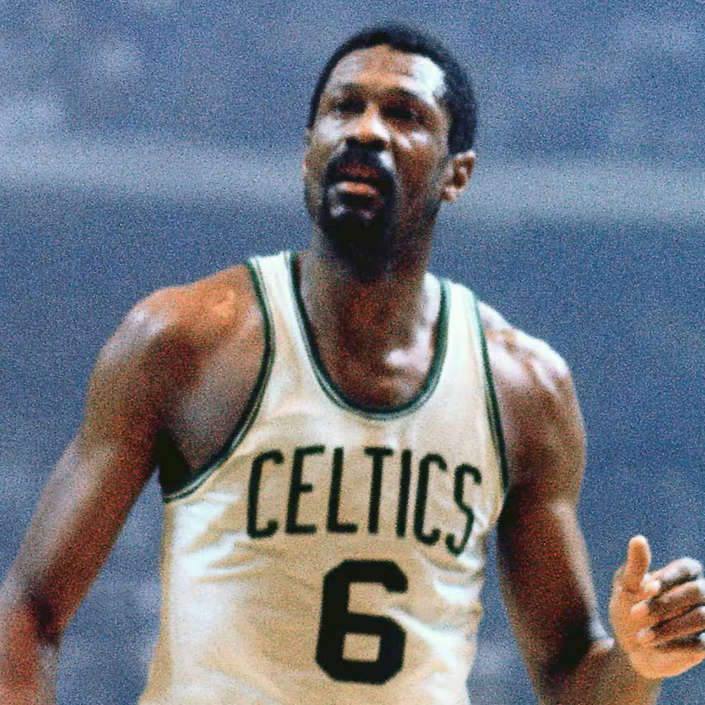
Bill Russell
Local e data de nascimento: Monroe, Louisiana, Estados Unidos – 12/02/1934
Altura: 2,06m
Peso: 98kg
Universidade: University of San Francisco
Draft: 2ª escolha no Draft de 1956
Equipes:Boston Celtics
Títulos: 11 títulos (1957, 1959, 1960, 1961, 1962, 1963, 1964, 1965, 1966, 1968, 1969)
Prêmios Individuais: NBA MVP: 5 prêmios (1958, 1961, 1962, 1963, 1965)
NBA All-Star: 12
All-Star Game MVP: 1963
All-NBA Team: 11 times (First Team: 1959, 1963, 1965; Second Team: 1958, 1960, 1961, 1962, 1964,
1966, 1967, 1968).
NBA All-Defensive Team: 1969
Naismith Memorial Basketball Hall of Fame: Indicado em 1975 (Jogador), 2021 (Técnico).
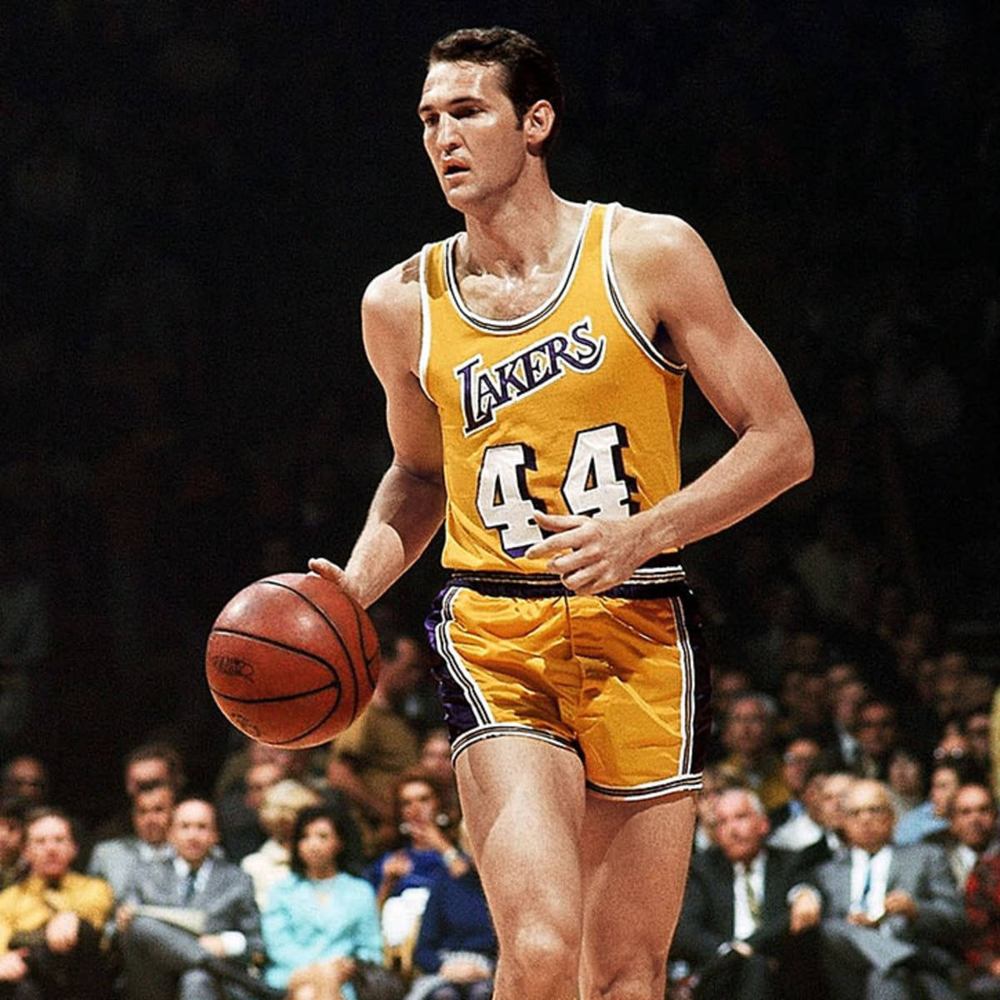
Jerry West
Local e data de nascimento: Chelyan, West Virginia – Estados Unidos – 28/05/1938
Altura: 1,91m
Peso: 79kg
Universidade: West Virginia University
Draft: 2ª escolha no Draft de 1960 (Minneapolis Lakers)
Equipes:Los Angeles Lakers
Títulos: 1 títulos (1972)
Prêmios Individuais: NBA Finals MVP: 1 (1969)
NBA All-Star: 14
All-Star Game MVP: 1972
All-NBA Team: 12 (Primeiro Time: 1962 – 1967, 1970 - 1973; segundo Time: 1968 - 1969)
NBA All-Defensive Team: 4 (Primeiro time: 1970 – 1973; Segundo Time: 1969)
Naismith Memorial Basketball Hall of Fame: Indicado em 1979 (Jogador)
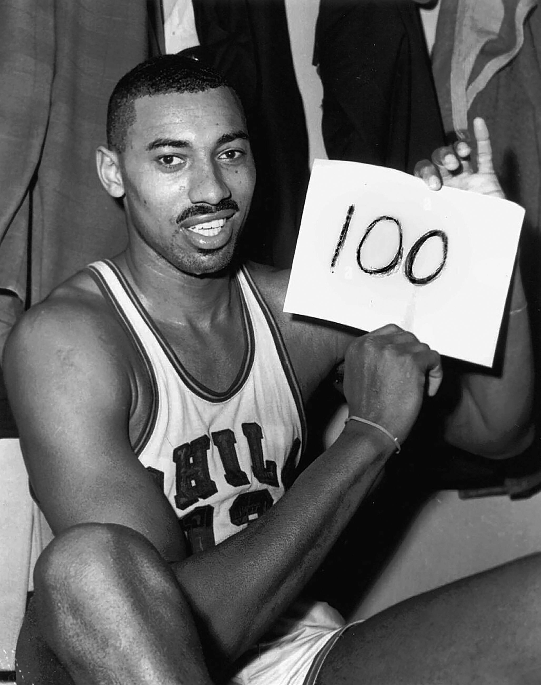
Wilt Chamberlain
Local e data de nascimento: Philadelphia, Pennsylvania – Estados Unidos – 21/08/1936
Altura: 2,16m
Peso: 113kg
Universidade: Universidade do Kansas
Draft: Escolha territorial (Philadelphia Warriors)
Equipes: Philadelphia/San Francisco Warriors
Títulos: 2 títulos (1967 e 1972)
Prêmios Individuais: NBA Finals MVP: 1 (1972)
NBA All-Star: 13
All-Star Game MVP: 1960
Rookie of The Year: 1960
All-NBA Team: 10 (Primeiro Time: 1960 – 1962, 1964, 1966 - 1968; Segundo Time: 1963, 1965, 1972)
NBA All-Defensive Team: 2 (Primeiro time: 1972 – 1973)
Naismith Memorial Basketball Hall of Fame: Indicado em 1978
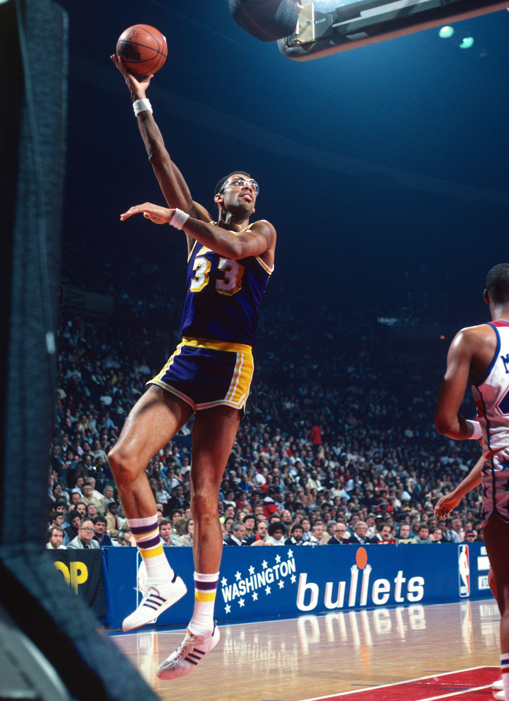
Kareem Abdul-Jabbar
Local e data de nascimento: New York City, New York – Estados Unidos – 16/04/1947
Altura: 2,18m
Peso: 102kg
Universidade: UCLA
Draft: 1ª escolha de 1969 (Milwaukee Bucks)
Equipes: Milwaukee Bucks e Los Angeles Lakers
Títulos: 6 títulos (1971, 1980, 1982, 1985, 1987 e 1988)
Prêmios Individuais:
MVP: 6 (1971, 1972, 1974, 1976, 1977, 1980)
NBA Finals MVP: 2 (1971 e 1985)
NBA All-Star: 19
Rookie of The Year: 1970
All-NBA Team: 15 (Primeiro Time: 1971 – 1974, 1976, 1977, 1980, 1981, 1984, 1986; Segundo Time: 1970,
1978, 1979, 1983, 1985)
NBA All-Defensive Team: 11 (Primeiro time: 1974, 1975, 1979 – 1981; Segundo Time: 1970, 1971, 1976 –
1978, 1984)
NBA All Rookie Team: 1 (1970)
Naismith Memorial Basketball Hall of Fame: Indicado em 1995
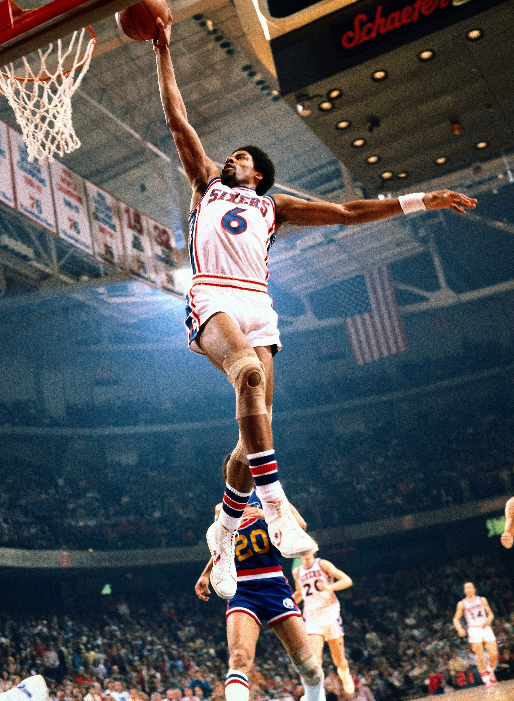
Julius Erving
Local e data de nascimento: East Meadow, New York – Estados Unidos – 22/02/1950
Altura: 2,01m
Peso: 91kg
Universidade: UMass
Draft: 12ª escolha de 1972 (Milwaukee Bucks)
Equipes: New York Nets (atual Brooklyn Nets) e Philadelphia 76ers
Títulos: 1 títulos (1983)
Prêmios Individuais:
MVP: 1 (1981)
NBA All-Star Game MVP: 2 (1977 e 1983)
NBA All-Star: 11
All-NBA Team: 7 (Primeiro Time: 1981, 1980 - 1983; Segundo Time: 1977, 1984)
Naismith Memorial Basketball Hall of Fame: Indicado em 1993
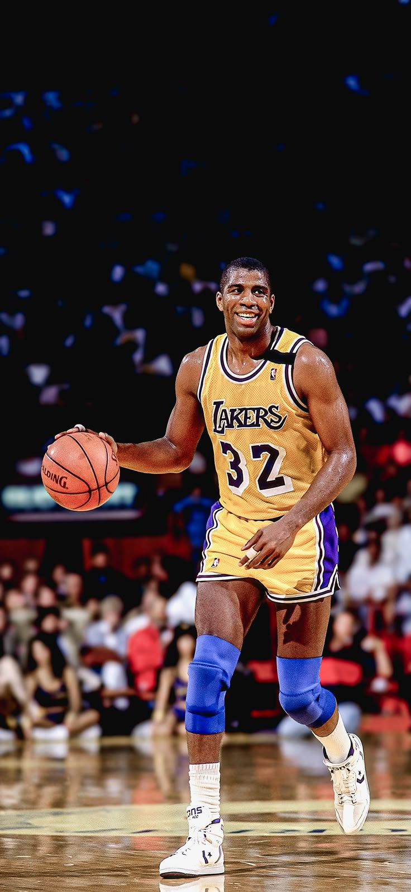
Magic Johnson
Local e data de nascimento: Lansing, Michigan – Estados Unidos – 14/08/1959
Altura: 2,06m
Peso: 100kg
Universidade: Michigan State
Draft: 1ª escolha de 1979 (Los Angeles Lakers)
Equipes: Los Angeles Lakers
Títulos: 5 títulos (1980, 1982, 1985, 1987, 1988)
Prêmios Individuais:
MVP: 3 (1987, 1989, 1990)
NBA Finals MVP: 3 (1980, 1982, 1987)
NBA All-Star Game MVP: 2 (1990, 1992)
NBA All-Star: 12
All-NBA Team: 10 (Primeiro Time: 1983 - 1991; Segundo Time: 1982)
NBA All-Rookie Team: 1980
Naismith Memorial Basketball Hall of Fame: Indicado em 2002
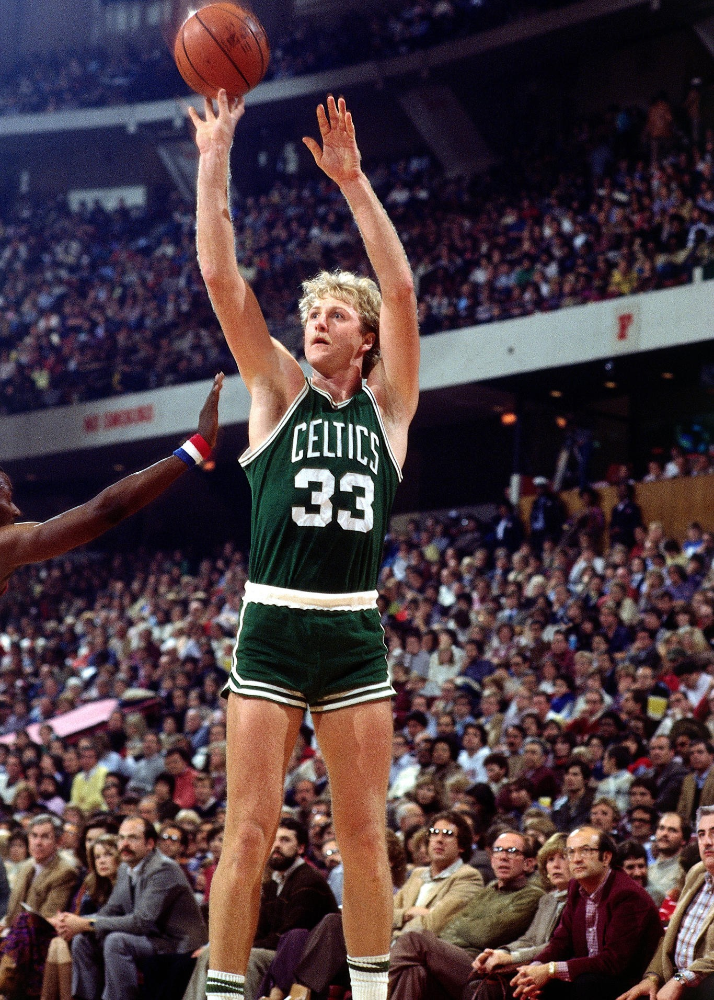
Larry Bird
Local e data de nascimento: West Baden Springs, Indiana – Estados Unidos – 07/12/1956
Altura: 2,06m
Peso: 100kg
Universidade: Indiana State
Draft: 6ª escolha de 1978 (Boston Celtics)
Equipes: Boston Celtics
Títulos: 3 títulos (1981, 1984, 1986)
Prêmios Individuais:
MVP: 3 (1984 - 1986)
NBA Finals MVP: 2 (1984, 1986)
NBA All-Star Game MVP: 1 (1982)
NBA All-Star: 12
All-NBA Team: 10 (Primeiro Time: 1980 - 1988; Segundo Time: 1990)
NBA All-Defensive Team: 3 (Segundo Time: 1982 – 1984)
NBA Rookie Of The Year: 1980
NBA All-Rookie Team: 1980
Naismith Memorial Basketball Hall of Fame: Indicado em 1998
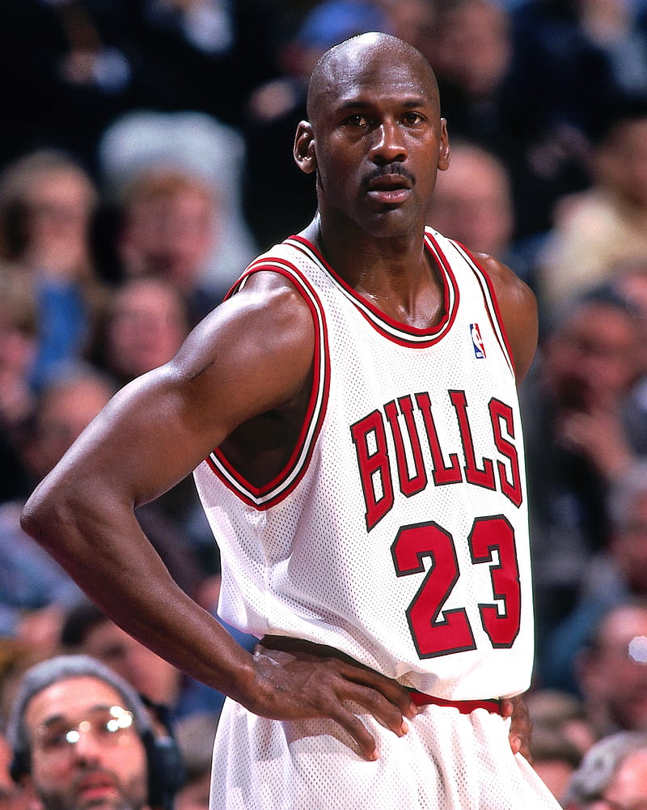
Michael Jordan
Local e data de nascimento: Mew York City, New York – Estados Unidos – 17/02/1963
Altura: 1,98m
Peso: 98kg
Universidade: North Carolina
Draft: 3ª escolha de 1984 (Chicago Bulls)
Equipes: Chicago Bulls e Washington Wizards
Títulos: 6 títulos (1991 - 1993, 1996 - 1998)
Prêmios Individuais:
MVP: 5 (1988, 1991, 1992, 1996, 1998)
NBA Finals MVP: 6 (1991 - 1993, 1996 - 1998)
NBA All-Star Game MVP: 3 (1988, 1996, 1998)
NBA All-Star: 14
All-NBA Team: 11 (Primeiro Time: 1987 – 1993, 1996 - 1998; Segundo Time: 1985)
NBA Defensive Player Of The Year: 1988
NBA All-Defensive Team: 9 (Primeiro Time: 1988 – 1993, 1996 - 1998)
NBA Rookie Of The Year: 1985
NBA All-Rookie Team: 1985
Naismith Memorial Basketball Hall of Fame: Indicado em 2009
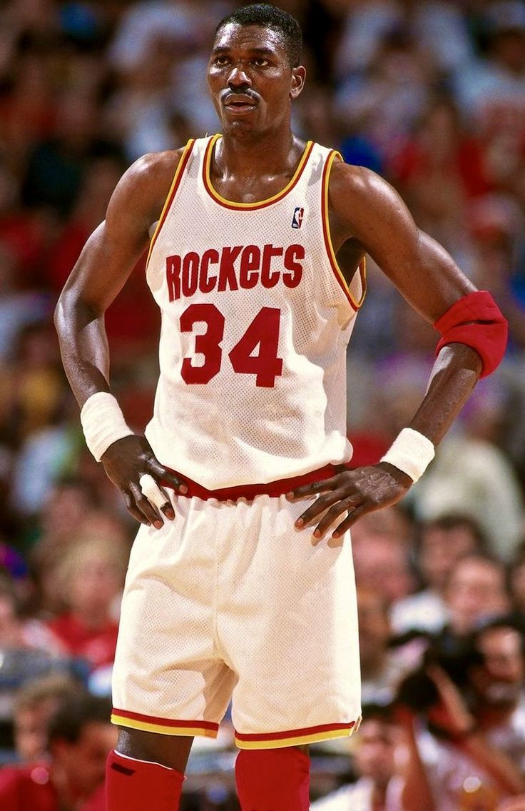
Hakeem Olajuwon
Local e data de nascimento: Lagos – Nigéria – 21/01/1963
Altura: 2,13m
Peso: 116kg
Universidade: Houston
Draft: 1ª escolha de 1984 (Houston Rockets)
Equipes: Houston Rockets e Toronto Raptors
Títulos: 2 títulos (1994, 1995)
Prêmios Individuais:
MVP: 1 (1994)
NBA Finals MVP: 2 (1994, 1995)
NBA All-Star: 12
All-NBA Team: 12 (Primeiro Time: 1987 – 1989, 1993, 1994, 1997; Segundo Time: 1986, 1990, 1996; Terceiro
Time: 1991, 1995, 1999)
NBA Defensive Player Of The Year: 2 (1993, 1994)
NBA All-Defensive Team: 9 (Primeiro Time: 1987, 1988, 1990, 1993, 1994; Segundo Time: 1985, 1991, 1996,
1997)
NBA All-Rookie Team: 1985
Naismith Memorial Basketball Hall of Fame: Indicado em 2008
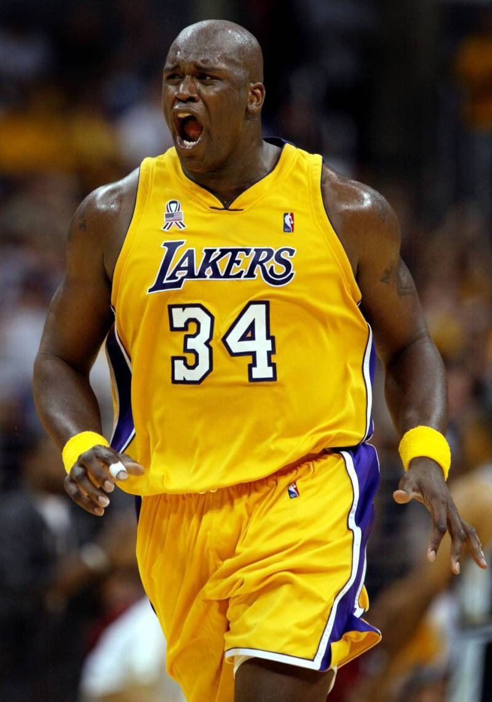
Shaquille O'Neal
Local e data de nascimento: Newark, New Jersey – Estados Unidos – 06/03/1972
Altura: 2,16m
Peso: 147kg
Universidade: LSU
Draft: 1ª escolha de 1992 (Orlando Magic)
Equipes: Orlando Magic, Los Angeles Lakers, Miami Heat, Phoenix Suns, Cleveland Cavaliers, Boston
Celtics
Títulos: 4 títulos (2000 – 2002, 2006)
Prêmios Individuais:
MVP: 1 (2000)
NBA Finals MVP: 3 (2000 - 2002)
NBA All-Star: 15
All-NBA Team: 14 (Primeiro Time: 1998, 2000 - 2006; Segundo Time: 1995, 1999; Terceiro Time: 1994, 1996,
1997, 2009)
NBA All-Defensive Team: 3 (Segundo Time: 2000, 2001, 2003)
NBA Rookie Of The Year: 1993
NBA All-Rookie Team: 1993
Naismith Memorial Basketball Hall of Fame: Indicado em 2016
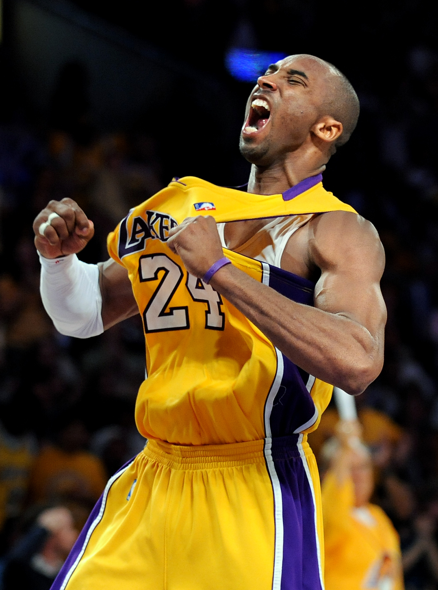
Kobe Bryant
Local e data de nascimento: Philadelphia, Pennsylvania – Estados Unidos – 23/08/1978
Altura: 1,98m
Peso: 96kg
Universidade: Lower Merion High School
Draft: 13ª escolha de 1996 (Charlotte Hornets)
Equipes: Los Angeles Lakers
Títulos: 5 títulos (2000 – 2002, 2009, 2010)
Prêmios Individuais:
MVP: 1 (2008)
NBA Finals MVP: 2 (2009, 2010)
NBA All-Star: 18
NBA All-Star Game MVP: 4 (2002, 2007, 2009, 2011)
All-NBA Team: 15 (Primeiro Time: 2002 – 2004, 2006 - 2013; Segundo Time: 2000, 2001; Terceiro Time:
1999, 2005)
NBA All-Defensive Team: 12 (Primeiro Time: 2000, 2003, 2004, 2006 – 2011; Segundo Time: 2001, 2002,
2012)
NBA All-Rookie Team: Segundo time (1997)
Naismith Memorial Basketball Hall of Fame: Indicado em 2020
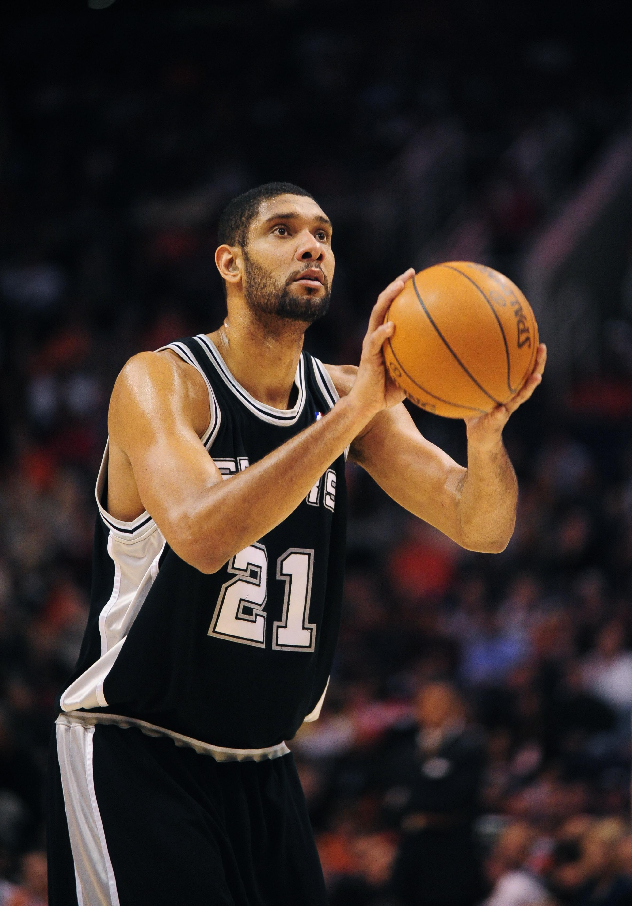
Tim Duncan
Local e data de nascimento: Saint Croix - Ilhas Virgens Americanas – 25/04/1976
Altura: 2,11m
Peso: 113kg
Universidade: Wake Forest
Draft: 1ª escolha de 1997 (San Antonio Spurs)
Equipes: San Antonio Spurs
Títulos: 5 títulos (1999, 2003, 2005, 2007, 2014)
Prêmios Individuais:
MVP: 2 (2002, 2003)
NBA Finals MVP: 3 (1999, 2003, 2005)
NBA All-Star: 15
NBA All-Star Game MVP: 1 (2000)
All-NBA Team: 15 (Primeiro Time: 1998 - 2005, 2007, 2013; Segundo Time: 2006, 2008, 2009; Terceiro Time:
2010, 2015)
NBA All-Defensive Team: 15 (Primeiro Time: 1999 - 2003, 2005, 2007, 2008; Segundo Time: 1998, 2004,
2006, 2009, 2010, 2013, 2015)
NBA Rookie Of The Year: 1998
NBA All-Rookie Team: Primeiro time (1998)
Naismith Memorial Basketball Hall of Fame: Indicado em 2020
Jogadores Atuais
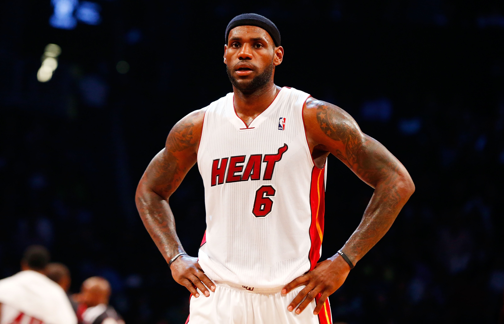
Lebron James
Local e data de nascimento: Akron, Ohio – Estados Unidos – 30/12/1984
Altura: 2,06m
Peso: 113kg
Universidade: St. Vincent – St. Mary High School
Draft: 1ª escolha de 2003 (Cleveland Cavaliers)
Equipes: Cleveland Cavaliers, Miami Heat, Los Angeles Lakers
Títulos: 4 títulos (2012, 2013, 2016, 2020)
Prêmios Individuais:
MVP: 4 (2009, 2010, 2012, 2013)
NBA Finals MVP: 4 (2012, 2013, 2016, 2020)
NBA All-Star: 22
NBA All-Star Game MVP: 3 (2006, 2008, 2018)
All-NBA Team: 21 (Primeiro Time: 2006, 2008 - 2018, 2020; Segundo Time: 2005, 2007, 2021, 2025; Terceiro
Time: 2019, 2022 - 2024)
NBA All-Defensive Team: 6 (Primeiro Time: 2009 - 2013; Segundo Time: 2014)
NBA Rookie Of The Year: 2004
NBA All-Rookie Team: Primeiro time (2004)
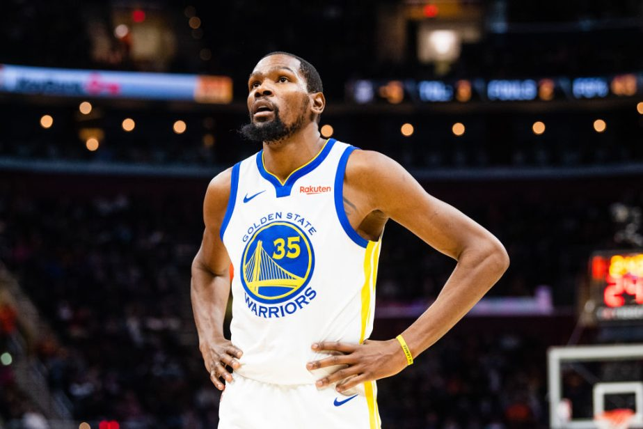
Kevin Durant
Local e data de nascimento: Washington, D.C. – Estados Unidos – 29/09/1988
Altura: 2,11m
Peso: 109kg
Universidade: Texas
Draft: 2ª escolha de 2007 (Seattle Supersonics)
Equipes: Seattle Supersonics, Oklahoma City Thunder, Golden State Warriors, Brooklyn Nets, Phoenix Suns,
Houston Rockets
Títulos: 2 títulos (2017, 2018)
Prêmios Individuais:
MVP: 1 (2014)
NBA Finals MVP: 2 (2017, 2018)
NBA All-Star: 16
NBA All-Star Game MVP: 2 (2012, 2019)
All-NBA Team: 11 (Primeiro Time: 2010 – 2014, 2018; Segundo Time: 2016, 2017, 2019, 2022, 2024)
NBA Rookie Of The Year: 2008
NBA All-Rookie Team: Primeiro time (2008)
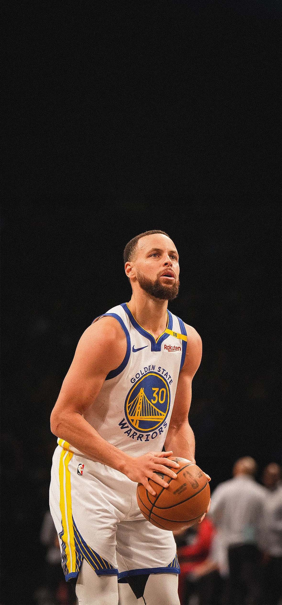
Stephen Curry
Local e data de nascimento: Akron, Ohio – Estados Unidos – 14/03/1988
Altura: 1,88m
Peso: 84kg
Universidade: Davidson
Draft: 7ª escolha de 2009 (Golden State Warriors)
Equipes: Golden State Warriors
Títulos: 4 títulos (2015, 2017, 2018, 2022)
Prêmios Individuais:
MVP: 2 (2015, 2016)
NBA Finals MVP: 1 (2022)
NBA All-Star: 12
NBA All-Star Game MVP: 2 (2022, 2025)
All-NBA Team: 11 (Primeiro Time: 2015, 2016, 2019, 2021; Segundo Time: 2014, 2017, 2022, 2023, 2025;
Terceiro Time: 2018, 2024)
NBA All-Rookie Team: Primeiro time (2010)
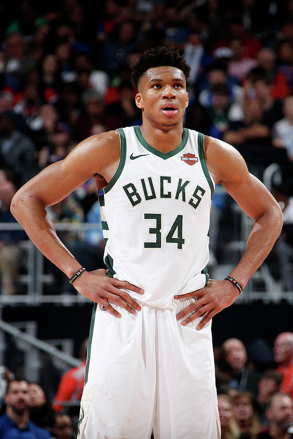
Giannis Antetokounmpo
Local e data de nascimento: Atenas, Grécia – 06/12/1994
Altura: 2,11m
Peso: 110kg
Draft: 15ª escolha de 2009 (Milwaukee Bucks)
Equipes: Milwaukee Bucks
Títulos: 1 títulos (2021) e 1 NBA Cup (2024)
Prêmios Individuais:
MVP: 2 (2019, 2020) e 1 NBA Cup MVP (2024)
NBA Finals MVP: 1 (2021)
NBA All-Star: 10
NBA All-Star Game MVP: 1 (2021)
All-NBA Team: 9 (Primeiro Time: 2019 - 2025; Segundo Time: 2017, 2018)
NBA Defensive Player Of The Year: 2020
NBA All-Defensive Team: 5 (Primeiro Time: 2019 – 2022; Segundo Time: 2017)
NBA Most Improved Player: 2017
NBA All-Rookie Team: Segundo Time (2014)
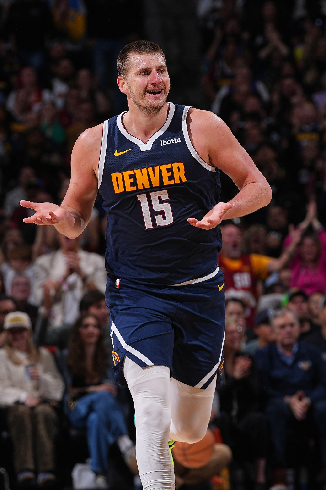
Nikola Jokic
Local e data de nascimento: Sombor, Sérvia (Iugoslávia) – 19/02/1995
Altura: 2,11m
Peso: 129kg
Draft: 41ª escolha de segundo round de 2014 (Denver Nuggets)
Equipes: Denver Nuggets
Títulos: 1 títulos (2023)
Prêmios Individuais:
MVP: 3 (2021, 2022, 2024)
NBA Finals MVP: 1 (2023)
NBA All-Star: 8
All-NBA Team: 7 (Primeiro Time: 2019, 2021, 2022, 2024, 2025; Segundo Time: 2020, 2023)
NBA All-Rookie Team: Primeiro Time (2016)
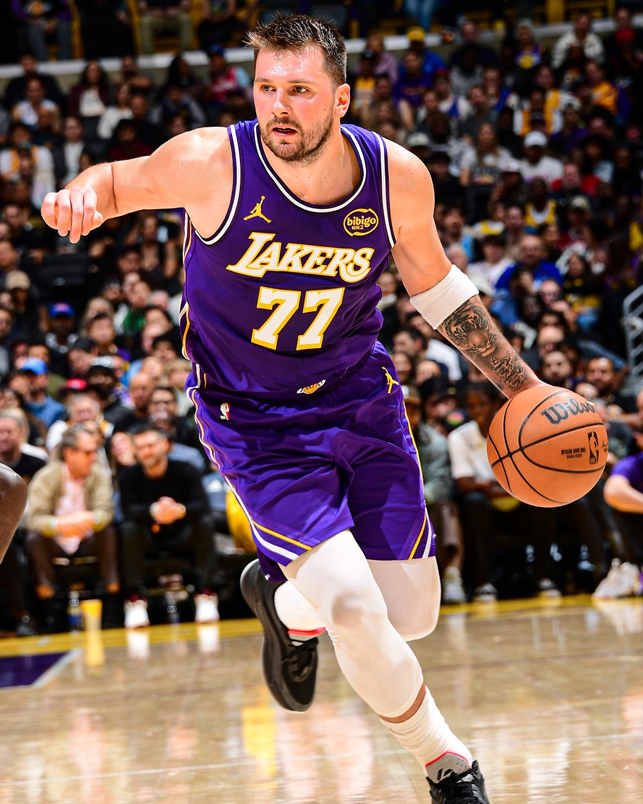
Luka Doncic
Local e data de nascimento: Ljubljana, Eslovênia – 28/02/1999
Altura: 2,03m
Peso: 104kg
Draft: 3ª escolha de 2018 (Atlanta Hawks)
Equipes: Dallas Mavericks, Los Angeles Lakers
Prêmios Individuais:
NBA All-Star: 6
All-NBA Team: 5 (Primeiro Time: 2020 - 2024)
NBA Rookie Of The Year: 2019
NBA All-Rookie Team: Primeiro Time (2019)
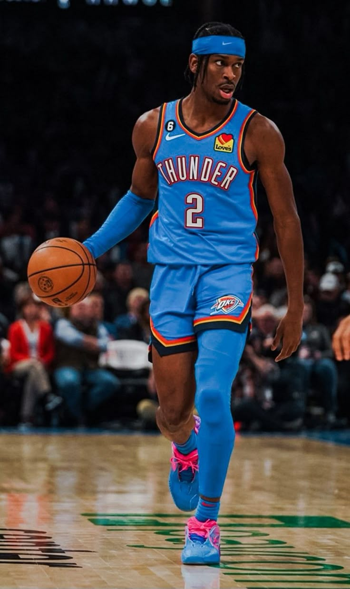
Shai Gilgeous-Alexander
Local e data de nascimento: Toronto, Ontario - Canadá – 12/07/1998
Altura: 1,98m
Peso: 88kg
Universidade: Kentucky
Draft: 11ª escolha de 2018 (Charlotte Hornets)
Equipes: Los Angeles Clippers, Oklahoma City Thunder
Títulos: 1 (2025)
Prêmios Individuais:
MVP: 1 (2025)
NBA Finals MVP: 1 (2025)
NBA All-Star: 4
All-NBA Team: 3 (Primeiro Time: 2023 - 2025)
NBA All-Rookie Team: Segundo Time (2019)

Victor Wembanyama
Local e data de nascimento: Le Chesnay - França – 28/02/1999
Altura: 2,24m
Peso: 107kg
Draft: 1ª escolha de 2023 (San Antonio Spurs)
Equipes: San Antonio Spurs
Prêmios Individuais:
NBA All-Star: 2
NBA Defensive Player Of The Year: 2026
NBA All-Defensive Team: 1 (Primeiro Time: 2024)
NBA Rookie Of The Year: 2024
NBA All-Rookie Team: Primeiro Time (2024)